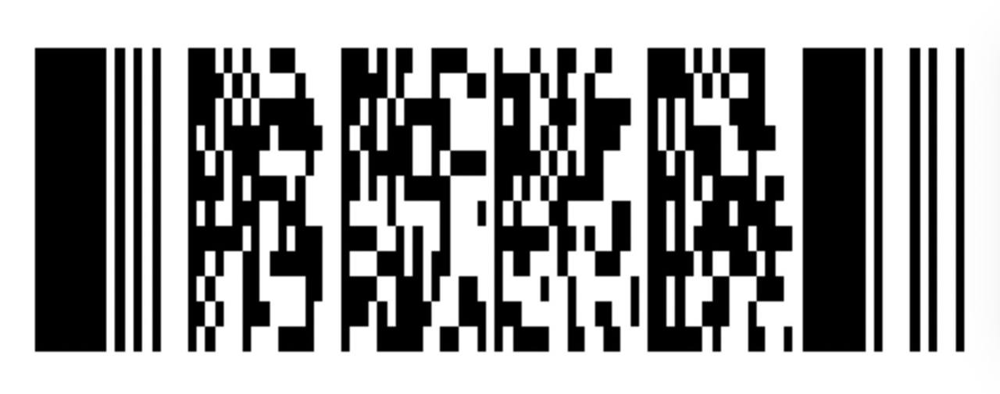

Лента: розовая карта со штрихкодом
Покажите штрихкод кассиру

Бонусная карта Лента. Розовая версия страницы с бонусной картой Лента. Сохраните картинку, чтобы всегда иметь штрихкод под рукой.
Покупки по карте — просто
- Соберите корзину как обычно
- На кассе откройте страницу со штрихкодом
- Оплатите покупки и сохраните чек
Совет: если сканер не читает код, слегка отодвиньте телефон от считывателя.
Частые вопросы
Что такое бонусная карта?
Это инструмент программы лояльности: покупки по ней дают баллы и доступ к акциям.
Можно ли хранить штрихкод в заметках?
Да, добавьте картинку в заметки телефона или закрепите страницу в браузере.
Почему лучше открыть страницу заранее?
Чтобы не ждать загрузки у кассы, пока собирается очередь.